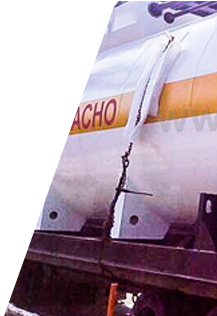

Топливораздаточные модули, КАЗС, Мини АЗС, оптовые поставки дизтоплива.
Ваш регион
+7 (499) 551-88-36
Главная > Автоматические АЗС
- Ремонт, монтаж, пусконаладка и сервис
- Комплексная автоматизация АЗС
- Зачистка и градуировка резервуаров




Градуировка резервуаров
При эксплуатации резервуаров в коммерческой или промышленной деятельности нужен постоянный учет, отражающий расход и остатки хранимой продукции. Для этой цели осуществляется специальная градуировка резервуара, по результатам которой составляется градуировочная таблица. В таблице обязательно указывается срок действия, после чего должна проводиться повторная градуировка оборудования.
Необходимость регулярной градуировки обусловлена тем, что в процессе эксплуатации объем резервуара со временем меняется в результате естественного износа, появления донных отложений, вмятин и т.д. Постепенно данные градуировочной таблицы резервуара теряют свою актуальность, внося искажения в процесс учета хранимых продуктов. Работы по градуировке должны выполняться в строгом соответствии с регламентирующей документацией (ГОСТ 8.570-2000 и ГОСТ 8.346-2000).
Как часто осуществляется градуировка резервуаров?
Сроки проведения градуировки емкостей не должны превышать период использования градуировочной таблицы. Как правило, на предприятиях для этой цели составляется и утверждается специальный график. Внеочередная градуировка оборудования может выполняться после ремонта или очистки резервуара, а также после изменения его конструкции.
Методы градуировки резервуаров
Для проведения градуировки используется несколько способов: геометрический, объемный статический, объемный динамический. В некоторых случаях возможно применение нескольких методик в комплексе. Выбор используемого способа градуировки определяется объемом резервуара, возможностью использования разных средств измерения и экономической целесообразностью. Кроме того, имеют значения условия эксплуатации сосуда: для подземных емкостей подходит только объемный метод.
Важно знать, что градуировкой резервуаров могут заниматься только организации, имеющие специальные разрешительные документы (аттестат аккредитации, лицензия). А соответствующая квалификация лиц, выполняющих проверку емкостей и резервуаров, должна подтверждаться документально. В процессе градуировки обязательно составляется таблица, срок службы которой составляет 5 лет.
Градуировка резервуаров в компании «Академия АЗС»
Компания «Академия АЗС» уже не первый год занимается разработкой и производством топливных модулей и мини-АЗС, а также оказывает услуги по градуировке и зачистке резервуаров. Мы накопили солидный опыт в плане работы с резервуарами и емкостями, и имеем все необходимые разрешительные документы на проведение данных работ.
Наши квалифицированные и аттестованные специалисты выполнят градуировку ваших резервуаров с допустимой погрешностью и в полном соответствии с установленными процедурами. Имея в распоряжении современное оборудование и обладая большим опытом, мы можем гарантировать высокое качество оказываемых услуг.
Для получения дополнительной информации по градуировке резервуаров или оформления заявки вы можете связаться с нашими специалистами по телефону.
Зачистка резервуаров от нефтепродуктов
Качество хранимых или перевозимых нефтепродуктов напрямую зависит от состояния используемых резервуаров. Поэтому для бесперебойной работы АЗС, нефтебаз и хранилищ ГСМ требуется своевременное удаление остатков нефтепродуктов, шлама и влаги из емкостей. Это необходимо для обеспечения надежной работы емкостей и резервуаров, наряду с постоянным контролем их технического состояния в течение всего периода эксплуатации.
Зачистка емкостей и резервуаров проводится в обязательном
порядке, если требуется:
- соблюсти технические требования по эксплуатации резервуаров;
- обеспечить надежную бесперебойную работу оборудования;
- выполнить ремонтные работы, в том числе огневые работы;
- обеспечить неизменное качество нефти и нефтепродуктов;
- сменить тип нефтепродукта.
Как часто проводится зачистка емкостей и резервуаров?
Сроки очистки резервуаров от остатков нефтепродуктов должны быть основаны на «Правилах технической эксплуатации резервуаров» от 2004 года. Согласно Правилам, частичное обследование резервуаров рекомендовано каждые 5 лет, полное – каждые 10 лет.
Необходимость регулярной зачистки резервуаров для хранения нефтепродуктов обусловлена требованиями экологической и пожарной безопасности. После выполнения очистительных работ появляется возможность тщательного осмотра и необходимого ремонта этих емкостей, а также создания градуировочных таблиц для более точного учета топлива.
Периодичность очистки резервуаров, согласно требованиям ГОСТ 1510-84, определяется видом нефтепродуктов, условиями хранения, техническим состоянием емкостей, частотой смены типа хранимых нефтепродуктов. Например, в случае хранения авиационных бензинов, прямогонных бензинов, реактивного топлива и других аналогичных продуктов, регулярная зачистка резервуаров должна выполняться не реже двух раз в год.
Для резервуаров со смазочными маслами и присадками периодичность зачистки составляет раз в год. Емкости с автомобильными бензинами и дизельным топливом должны очищаться раз в два года.
Зачистка резервуаров от нефтепродуктов в компании «Академия АЗС»
Компания «Академия АЗС» оказывает полный комплекс услуг по зачистке емкостей и резервуаров для хранения нефтепродуктов. У нас работают квалифицированные специалисты, имеющие аттестацию по пожарно-технической и промышленной безопасности, а также разрешение на работу с опасными отходами.
Наша компания имеет солидный опыт работ в данной сфере и все соответствующие разрешения.
Мы гарантируем высокое качество и безопасность проводимых работ.
Для получения дополнительной информации или оформления заявки вы можете связаться с нашими специалистами по телефону.
-
Топливораздаточные модули, КАЗС, Мини АЗС, оптовые поставки дизтоплива.

-
Топливораздаточные модули, КАЗС, Мини АЗС, оптовые поставки дизтоплива.
-
Служба поддержки:+7 (499) 551-88-36По любым вопросам:mail@intellect4g.ru
-
-
Служба поддержки:+7 (499) 551-88-36По любым вопросам: mail@intellect4g.ru
-
Реквизиты ООО «Интеллект 4 Джи»:119136, Россия, Москва, Воробьевское шоссе 6
ОГРН: 1107847147210 ИНН: 7842430624Телефон/факс:Россия: +7 (800) 700-65-49
Москва: +7 (499) 551-88-36
Санкт-Петербург: +7 (812) 385-00-87
Калининград: +7 (4012) 988-050Служба поддержки:Дизайн сайта —+7 (499) 551-88-36По любым вопросам:mail@intellect4g.ru
Студия Евгения Ярового